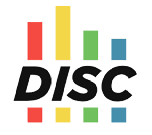
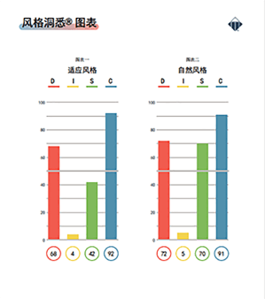
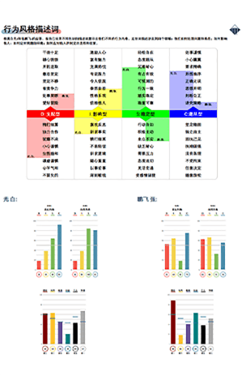
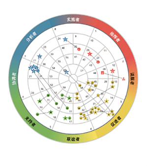
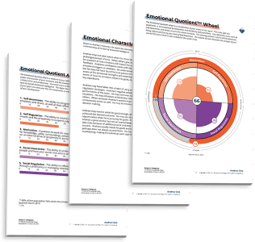

首页
人才测评
DISC行为风格
MOT激励因子
EQ情绪智力
DNA胜任力
ACI思维敏锐力
分析师认证
内训与解决方案
校友与案例
近期课程
线上商城
激励因子
胜任力
行为风格
情商
思维敏锐力
行为风格
激励因子
情商
胜任力
思维敏锐力

DISC 概念
concept
DISC是全球通用的行为语言，包含四种不同类型的行为模式：支配型、影响型、稳定型和遵从性。
基于威廉·马斯顿“常人情绪”理论所研发的全球首款DISC在线测评，摒弃贴标签式评价而使用场景化评价，首创4个情
境（D-目标挑战、I-沟通影响、S-节奏变化、C-程序规则）与12项行为特质（遵循政策、客户关系、以人为本等），更
详尽的分析个体与团队。
简单而言之：DISC衡量一个人如何做事，是可被观察到的行为习惯。
DISC 维度介绍
introduce
要充分理解DISC，就要理解这四种行为维度的组合所代表的含义。一般而言，一个人会有一或两个主导的行为特征，
但也需要考虑其他非主导行为的特征，也就是说一个人的行为模式是由四个维度的组合来定义一个人的行为模式的，这种行为模式往往是独一无二的。
D（Dominance）- 支配型
这个维度衡量的是一个人如何应对问题和挑战
如果你的最高分是D，你是一个
直接型沟通者
如果你的最低分是D，你是一个
反思型沟通者
I（Influence） - 影响型
这个维度衡量的是一个人如何应对人际和沟通
如果你的最高分是I，你是一个
开朗型沟通者
如果你的最低分是I，你是一个
保守型沟通者
S（Steadiness）- 稳定型
这个维度衡量的是一个人如何应对节奏和一致性
如果你的最高分是S，你是一个
稳健型沟通者
如果你的最低分是S，你是一个
灵活型沟通者
C（Compliance）- 遵从型
这个维度衡量的是一个人如何应对规则和流程
如果你的最高分是C，你是一个
精准型沟通者
如果你的最低分是C，你是一个
开创型沟通者
DISC应用场景
application scenarios
DISC测评在公司的个体，团队和组织层面都有用武之地。DISC测评衡量的是一个人的行为反应，并可以通过图表具象地描述出来
个体层面
DISC揭示了一个人独特的行为组合，解释了为什么他们在不同情境下会有不同的行为反应。接受和理解DISC语言
可以帮助个人：
提高生产力和
员工参与度
最大限度地
发挥个体优势
减少
不必要的
冲突
加强沟通
发展
自我意识

人际层面
TTI 有针对两个人的人际对比报告，这有助于分享他们的相似之处，突出他们的差异，并使用彼此愿意交流的方
式来互动。对于有不同沟通风格的团队成员，该报告提供了沟通指导方针
对比报告给谁使用？
经理和员工
共事的2位
合作伙伴
人际互相冲突
的2位同事
新员工和老板
2位候选人申请
相同的职位

团队层面
团队报告可以呈现出三个或更多员工的自然风格与适应风格。它能够直观地呈现团队的优势与挑战，同时促进整
个团队或部门成员之间彼此的了解。
DISC如何帮助团队？
有顺畅的
内部沟通
提高
项目的ROI
提升
团队效能
找到
沟通差距
全盘
了解团队

组织层面
如何利用DISC提高组织效能？从个人DISC可以找到团队和组织层面的行为偏好。从团队报告中可以发现团队在发
展中的资源，不同行为风格的员工如何协作共事。使用DISC可以帮助组织提高个人参与度和生产力，从整体上
提升组织效能
用DISC来支持哪些项目？
教练
培训
自我认知探索
团建
领导力发展
理论发展
introduce
TTI DISC测评最初是由沃尔特·克拉克（Walter V. Clarke)设计的模型而开发的，他是一位行业心理学家，他的测评模型的理论基于
普雷斯科特·莱基(Prescott Lecky)具有哲学意义的“自我一致性”理论。莱基认为，保存个体的自我形象是人类所拥有的最高价值。
同时，莱基也启发了几位著名的学生，包括汉斯·安斯巴赫（Hans Ansbacher)、沃尔特·克拉克(Walter Clarke)、
加德纳·墨菲(Gardner Murphy)、弗雷德里克·索恩(Frederick Thorne)、卡尔·罗杰斯(Carl Rogers)和威廉·马斯顿(William Maston)。
他们都被认为是发展DISC行为理论学科并成为现代测评工具研究的理论贡献者。
从1924年至1934年在哥伦比亚大学任教
发展了自我一致性理论
普雷斯科特·莱基
提出“活动向量分析”（AVA）
AVA在1941年首次应用于DISC测评
沃尔特·克拉克
1963年开发了个人档案系统
1981年卖给卡尔森营销集团
约翰 ·盖尔
威廉·马斯顿
在美国大学和塔夫茨大学任教
1928年出版 《正常人的情绪》
比尔&大卫·邦斯戴德
共同创立了TTI公司
在创建TTI前，他们从约翰·盖尔的同事那里获
得了授权的光盘
J. P. 克利弗
1951年加入AVA
1956年形成了自己的测评，称为自我DISC分裂
DISC可以与哪些报告组合？
compound mode
DISC测评是聚集在行为层面的工具，在实际应用时如果考虑到多个维度，会加强报告的还原度，并且可以结合不同的项目需求调整搭配的测评工具。
以下几款均是TTI应用比较成熟的组合测评报告：

人才洞悉版报告（DISC行为风格+Motivator激励因子组合）
通过行为风格和激励因子的双维度有机结合，可以深入了解一个人外显的行为以及背后动机的关联，帮助管理者
认知自我的同时，能灵活地与下属沟通并有效激励和辅导他们。适合用于基层员工自我认知探索、关键人才招聘
选拔、中基层管理者领导力发展，以及高潜项目。
TriMetrix EQ 报告 (DISC行为风格+Motivator激励因子+EQ情商组合)
三维度的组合，能够洞察出不同行为与动机的人，以及在情绪管理与互动的不同表现，可基于不同维度做出改
善，从而塑造出高情商领导者。适合用于中高层管理者招聘选拔、领导力发展，以及高潜项目。
TrIMetrix HD 人才报告 (DISC行为风格+Motivator激励因子+DNA胜任力+ACI思维敏锐力)
四维度的组合，能够洞察出不同行为与动机、软性技能发展状况的人，可以更深入地挖掘出他们的决策模式。该
报告在高管入职和辅导项目中是一个非常有效的诊断工具。适合用于中高层管理者招聘选拔、领导力发展，以及
高潜项目。
点击获取更多DISC+组合报告！